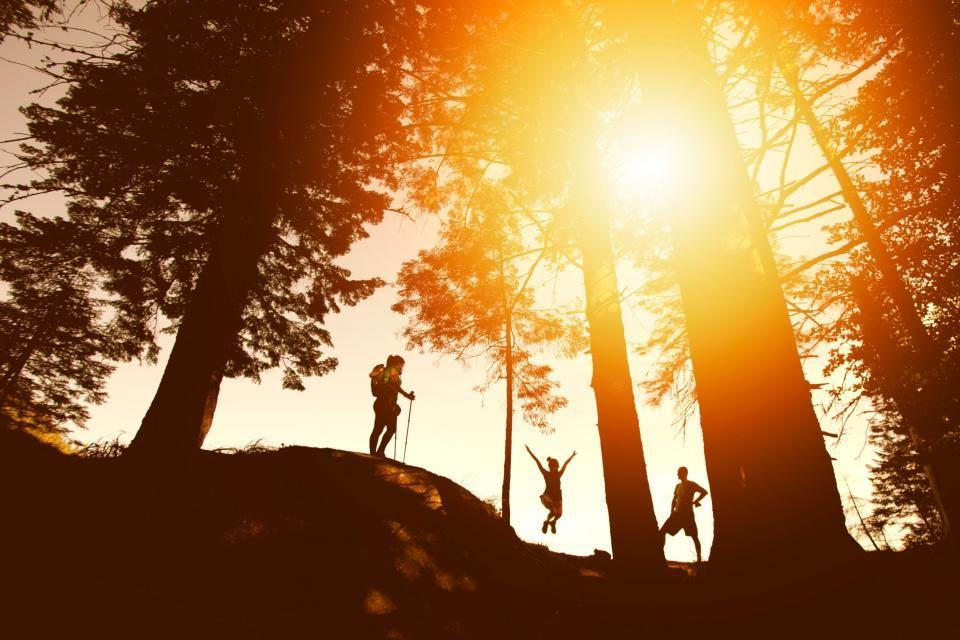
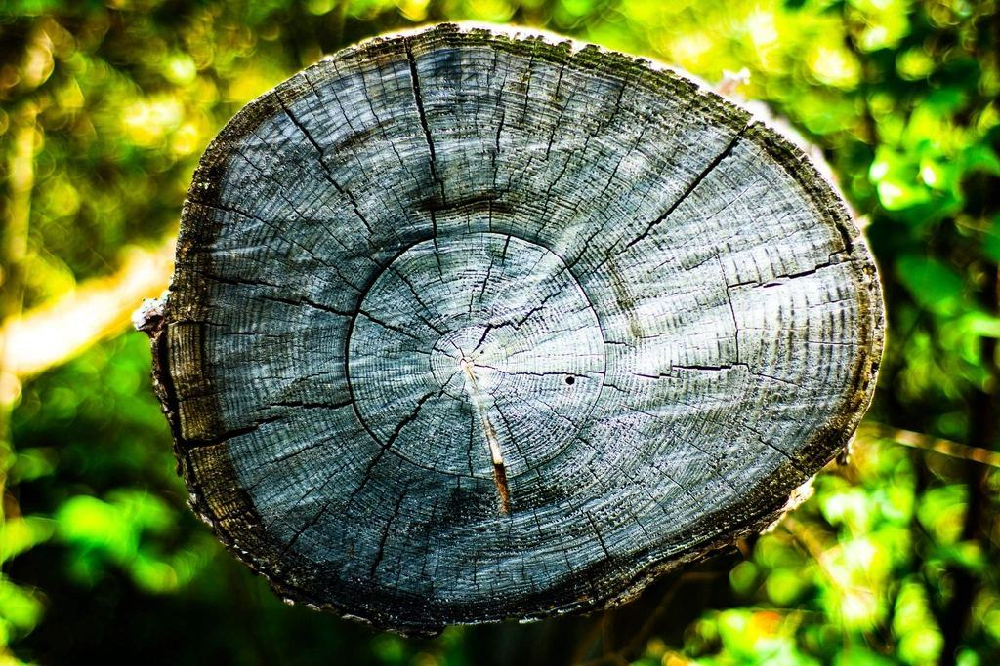
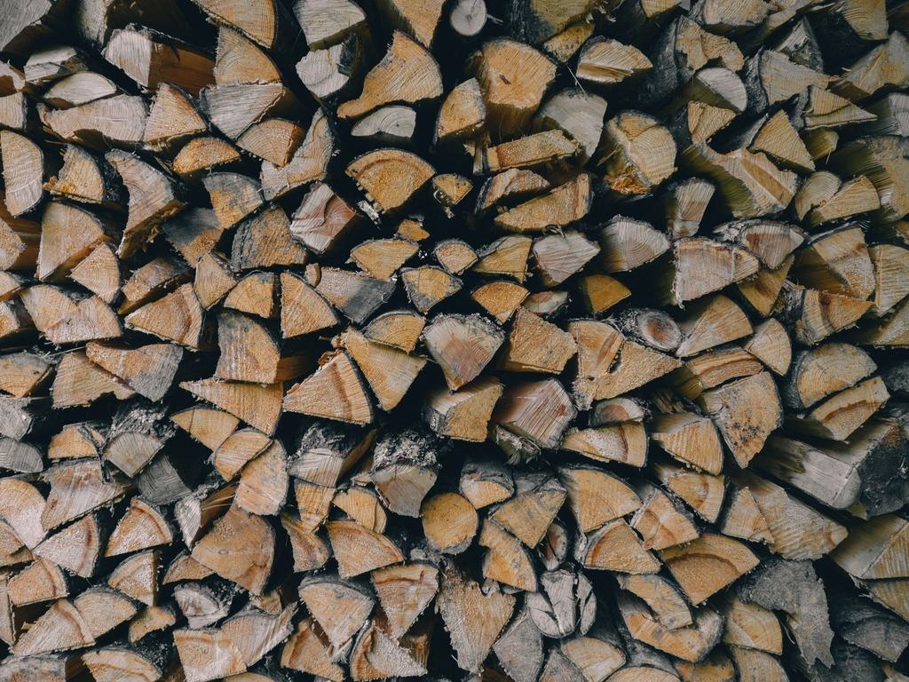
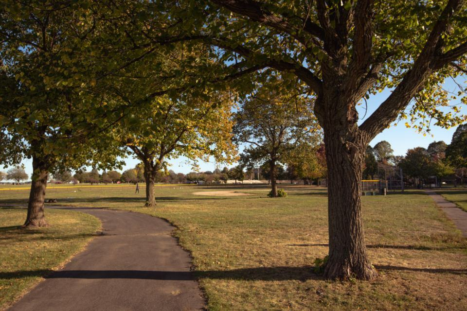
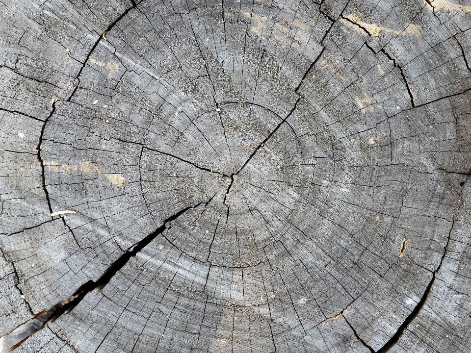

Tjänster
Umeå har fler björkar per invånare än någon annan svensk stad, planterade efter branden 1888. Många av dem står nu på villatomter på Teg, Haga och Öbacka och har blivit för stora. Det är där vi gör det mesta av vårt arbete.

Villatomter
En björk som planterades på 1950-talet kan i dag vara 25 meter hög och stå två meter från huset. Vi sektionsfäller med rep och batterisåg, och flisar direkt i den elektriska huggen.
Flisen kan du behålla som täckmaterial i rabatterna.

Förskolor och skolgårdar
Bensinsågar och dieselflis kräver att barnen hålls inne. Med vår utrustning räcker en avspärrning på tio meter och verksamheten kan pågå som vanligt.
Vi har ramavtal med tre fristående förskolor och en skola på Ålidhem.

Bostadsområden
Hyresvärdar och föreningar vill inte få klagomål från nattarbetande hyresgäster. Våra maskiner håller under 75 dB på tio meters avstånd.
Vi mäter ljudnivån och redovisar den i arbetsrapporten.

Allergivänlig björkvård
Den som har björkpollenallergi kan ha nytta av att kronan på en stor björk reduceras eller att trädet byts ut. Vi föreslår ersättningsträd som inte ger pollen i maj.
Rönn, hägg och oxel är vanliga alternativ i Umeås klimat.
Från besiktning till flis i rabatten
- 1

Besiktning
Vi kommer ut på cykel eller elbil, tittar på trädet och mäter avstånd till hus och ledningar.
- 2

Offert samma dag
Offerten kommer på mejl samma dag, med RUT-avdraget redan uträknat.
- 3

Arbetsdag
Batterierna är laddade kvällen innan. Vi börjar tidigt och arbetar utan tomgång eller avgaser.
- 4

Flis eller bortforsling
Flisen lämnas i rabatterna eller körs till en kompostanläggning på Dåva.
Certifierade och försäkrade
- ISA Certified ArboristElsa och Viktor är certifierade av International Society of Arboriculture sedan 2023.
- Svensk ArboristexamenAlla fem har arboristexamen från naturbruksgymnasium eller yrkeshögskola.
- Motorsågskörkort ABGäller även för batteridrivna sågar och fällning i tätort.
- Ansvarsförsäkring 10 MkrTäcker skador på byggnader, fordon och tredje man.